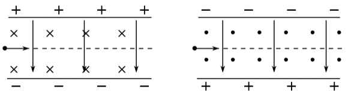
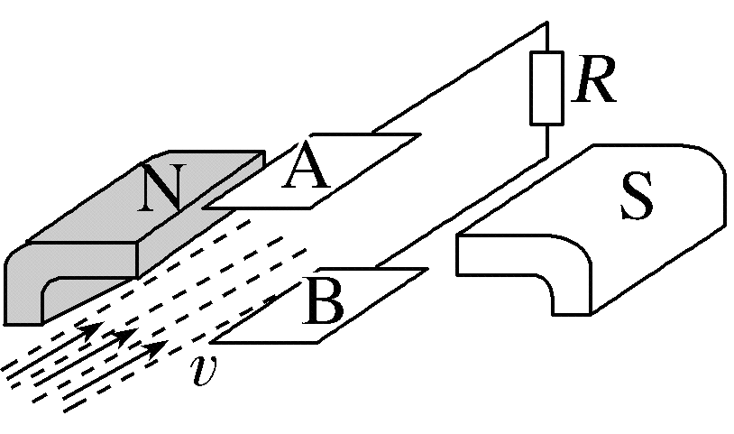
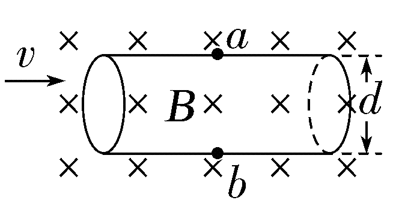
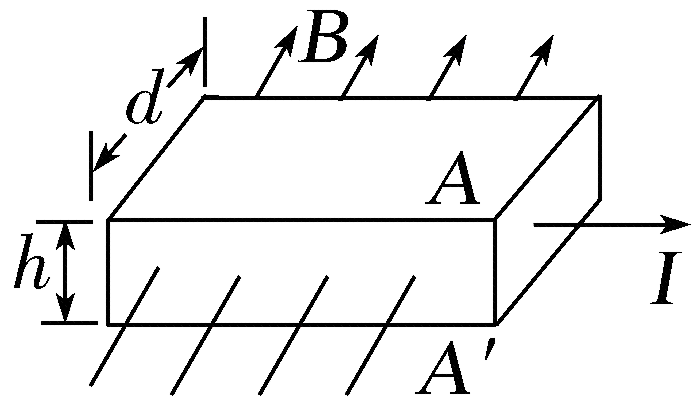
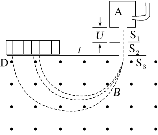
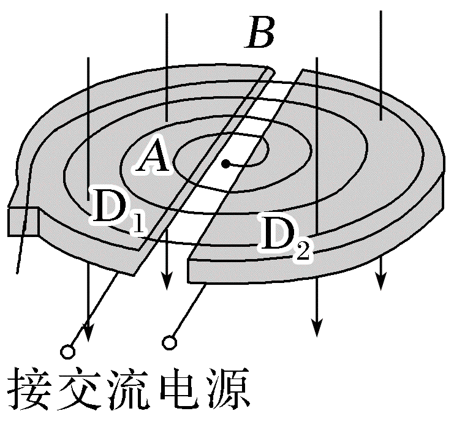

1带电粒子在组合场中的运动
模型定义
组合场是指静电场、磁场与无场区各位于一定的区域内，并不重叠；或在同一区域，静电场、磁场与无场区分时间段交替出现。
两大偏转模型

（1）电偏转
带电粒子垂直进入匀强电场中做类平抛运动（如图甲所示），可应用类平抛运动规律、动能定理等求解。
（2）磁偏转
带电粒子垂直进入匀强磁场中做匀速圆周运动（如图乙所示），洛伦兹力提供向心力。
| 对比项 | 电偏转（电场） | 磁偏转（磁场） |
|---|---|---|
| 受力 | 电场力 $qE$，恒定、做功 | 洛伦兹力 $qvB$，变向、不做功 |
| 轨迹 | 类平抛（抛物线） | 圆弧（匀速圆周） |
| 速度 | 大小、方向均改变 | 大小不变、方向变 |
| 常用规律 | 类平抛分解、动能定理 | 圆周运动、几何关系 |
要点点拨

解题方法
通常按时间的先后顺序把整个过程分成若干个小过程，在每一运动过程中，从粒子的受力性质、受力方向和速度方向的关系入手，分析粒子在电场中做什么运动、在磁场中做什么运动。
- 分段：按电场区、磁场区、无场区（或按时间）划分子过程；
- 定受力：判断每段的场力（电场力/洛伦兹力）及其方向；
- 判运动：由受力与速度关系确定是类平抛、匀速圆周还是匀速直线；
- 找衔接：每一段的末速度（大小与方向）即为下一段的初速度；
- 联立求解：几何关系与运动学/动能定理结合。
2带电粒子在叠加场中的运动
模型定义
叠加场是指带电质点处在重力场、电场、磁场两种或三种共存的空间，在重力、电场力、洛伦兹力共同作用下产生的机械运动模型。
三大基础场对应的作用力
| 场 | 作用力 | 性质 |
|---|---|---|
| 重力场 | $G = mg$ | 恒力（大小方向均不变） |
| 电场 | $F = Eq$ | 匀强电场中为恒力 |
| 磁场 | $F = qvB$ | 始终垂直速度方向、属于变力、永不做功 |
要点点拨：常见运动形式的分析
（1）在叠加场中做匀速圆周运动
带电粒子进入匀强电场、匀强磁场和重力场共同存在的叠加场中，若重力和电场力等大反向、合力为零，且粒子运动方向与磁场方向垂直，则带电粒子只在洛伦兹力作用下做匀速圆周运动。
（2）在匀强电场、匀强磁场和重力场中做直线运动
无轨道约束的自由带电粒子，在上述三场中的直线运动只能是匀速直线运动。这是因为电场力和重力都是恒力，若它们的合力不与洛伦兹力平衡，则粒子速度的大小和方向都会改变，就不可能保持直线运动（粒子沿磁场方向运动、$v \parallel B$、洛伦兹力为零的情况除外）。
解题方法
- 搞清楚叠加场的组成——一般是磁场与电场叠加、磁场与重力场叠加，或磁场、重力场、电场三者叠加。
- 正确进行受力分析——除重力、弹力、摩擦力外，还要特别关注电场力和洛伦兹力的分析。
- 确定运动状态——注意将运动情况和受力情况结合进行分析。
- 分段处理——对于粒子连续经过几个不同场的情况，要分段进行分析、处理。
- 画轨迹、灵活选方法——画出粒子的运动轨迹，灵活选择处理不同运动规律的方法。
3速度选择器
1．构造与原理
速度选择器由互相垂直的匀强电场和匀强磁场组成，带电粒子沿垂直于电场和磁场的方向射入，如图所示。电场强度 $E$ 与磁感应强度 $B$ 的方向相互垂直。

2．直线匀速通过的条件
粒子能够沿直线匀速通过速度选择器时，所受静电力与洛伦兹力平衡：
- 只有速度满足 $v = \frac{E}{B}$ 的粒子才能直线通过。
- 速度选择器只能选择速度，不能选择粒子的电性、电荷量或质量。
- 速度选择器具有单向性：改变粒子的入射速度方向，静电力方向不变而洛伦兹力方向反向，无法实现速度选择功能。
4磁流体发电机
1．原理
如图所示，等离子体以速度 $v$ 喷入磁感应强度为 $B$ 的匀强磁场中。正、负离子在洛伦兹力作用下分别向两块极板偏转并聚集，使 A、B 两板间产生电势差，从而将离子的动能通过磁场转化为电能。

2．电源正、负极判断
根据左手定则，可判断出图中 B 板为发电机的正极（具体极性由磁场方向和等离子体流动方向共同决定）。
3．电动势
当外电路断路时，正、负离子所受静电力和洛伦兹力达到平衡。设两极板间距为 $d$，最大电势差为 $U$，则
因此发电机的电动势
4．内阻
若等离子体的电阻率为 $\rho$，极板面积为 $S$，极板间距为 $d$，则发电机的内阻
5．回路电流
若外电路总电阻为 $R$，由闭合电路欧姆定律得
5电磁流量计
1．流量的定义
流量 $Q$ 表示单位时间内流过导管某一横截面的导电液体的体积。
2．导电液体流速的计算
一圆柱形导管直径为 $d$，用非磁性材料制成，其中有导电液体向右流动，如图所示。液体中的自由电荷（正、负离子）在洛伦兹力作用下发生偏转，使 $a$、$b$ 间出现电势差；当静电力与洛伦兹力平衡时，$a$、$b$ 间电势差 $U$ 达到最大。

由平衡条件
3．流量的表达式
导管横截面积 $S = \frac{\pi d^2}{4}$，所以
4．电势高低的判断
根据左手定则可知，图中 $a$ 侧聚集正电荷，因此电势关系为
6霍尔元件
1．定义
将高为 $h$、宽为 $d$ 的导体（自由电荷为电子或正电荷）置于匀强磁场 $B$ 中，当电流通过导体时，在导体上表面 $A$ 和下表面 $A'$ 之间产生电势差，这种现象称为霍尔效应，该电势差称为霍尔电压。

2．电势高低的判断
如图所示，导体中电流 $I$ 向右时：
- 若自由电荷是电子，根据左手定则可判断电子向下表面 $A'$ 偏转，因此 $A'$ 板电势高；
- 若自由电荷是正电荷，正电荷向上表面 $A$ 偏转，因此 $A'$ 板电势低。
3．霍尔电压
当自由电荷所受静电力与洛伦兹力平衡时，$A$、$A'$ 间的电势差 $U_H$ 保持稳定。设自由电荷电荷量为 $q$，定向移动速度为 $v$，则
又由电流微观表达式 $I = nqSv$，其中 $S = hd$ 为导体的横截面积，$n$ 为单位体积内自由电荷数，可得
代入霍尔电压表达式，得到
其中
称为霍尔系数，与导体材料有关。
7质谱仪的原理和分析
1．作用
测量带电粒子的质量（或比荷），以及分离同位素。
2．原理
质谱仪主要由加速电场和偏转磁场两部分组成，如图所示。粒子先在电场中加速，再垂直进入匀强磁场做匀速圆周运动，不同比荷的粒子打在感光板（或收集器）的不同位置。

- 加速电场：带电粒子经电压 $U$ 加速，由动能定理
$$qU = \frac{1}{2}mv^2 \quad \Rightarrow \quad v = \sqrt{\frac{2qU}{m}}$$
- 偏转磁场：粒子以速度 $v$ 垂直进入磁感应强度为 $B$ 的匀强磁场，洛伦兹力提供向心力
$$qvB = m\frac{v^2}{r} \quad \Rightarrow \quad r = \frac{mv}{qB}$$粒子打在底片上的位置到入射点的距离 $l$ 等于轨迹圆的直径，即$$l = 2r = \frac{2mv}{qB}$$
- 由以上两式联立，消去 $v$ 可得粒子的比荷或质量：
$$\frac{q}{m} = \frac{8U}{B^2 l^2} \qquad \text{或} \qquad m = \frac{q B^2 l^2}{8U}$$
8回旋加速器的原理和分析
1．构造
$D_1$、$D_2$ 是两个半圆形金属盒（D 形盒），D 形盒的缝隙处接交流电源，整个 D 形盒处于匀强磁场中，如图所示。

2．原理
- 交流电的周期与粒子做圆周运动的周期相等，即
$$T = \frac{2\pi m}{qB}$$粒子每经过一次 D 形盒缝隙，电场方向恰好改变，从而被持续加速。
- 粒子在圆周运动过程中一次次经过缝隙，两盒间电势差一次次改变正负，粒子被一次次加速。
- 将带电粒子在两盒狭缝之间的运动首尾相连，可等效为一个初速度为零的匀加速直线运动。
- 每加速一次，回旋半径增大一次。由 $nqU = \dfrac{1}{2}mv_n^2$ 可得
$$v_n = \sqrt{\frac{2nqU}{m}} \qquad \Rightarrow \qquad r_n = \frac{mv_n}{qB} = \frac{1}{B}\sqrt{\frac{2nmU}{q}}$$各半径之比为$$r_1 : r_2 : r_3 : \cdots = 1 : \sqrt{2} : \sqrt{3} : \cdots$$
- 获得的最大动能：当粒子轨道半径达到 D 形盒最大半径 $R$ 时被引出，由 $qv_mB = m\dfrac{v_m^2}{R}$ 得 $v_m = \dfrac{qBR}{m}$，于是
$$E_{km} = \frac{1}{2}mv_m^2 = \frac{q^2 B^2 R^2}{2m}$$⚠️ 注意：最大动能由磁感应强度 $B$ 和 D 形盒半径 $R$ 决定，与加速电压 $U$ 无关。
- 加速到最大动能所需的加速次数
$$N = \frac{E_{km}}{qU} = \frac{qB^2R^2}{2mU}$$
- 加速到最大动能的运动时间
- 在磁场中的运动时间：每转过半周用时 $\dfrac{T}{2} = \dfrac{\pi m}{qB}$，总时间
$$t_1 = N\cdot\frac{T}{2} = \frac{N\pi m}{qB}$$（若把最后一次引出前的半周不记，可近似为 $t_1\approx(N-1)\dfrac{T}{2}$。）
- 在电场中的加速时间：狭缝宽度为 $d$，粒子在电场中加速度 $a = \dfrac{qU}{md}$，则
$$t_2 = \frac{v_m}{a} = \frac{mv_m d}{qU} = \frac{BRd}{U}$$
- 总时间
$$t = t_1 + t_2$$
- 在磁场中的运动时间：每转过半周用时 $\dfrac{T}{2} = \dfrac{\pi m}{qB}$，总时间